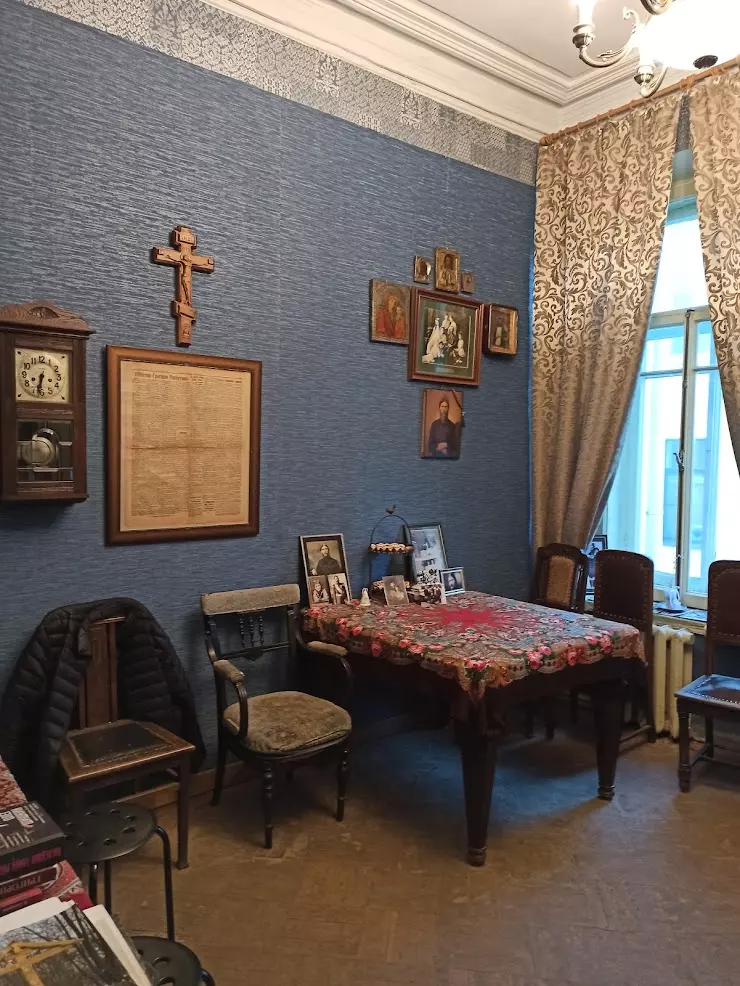
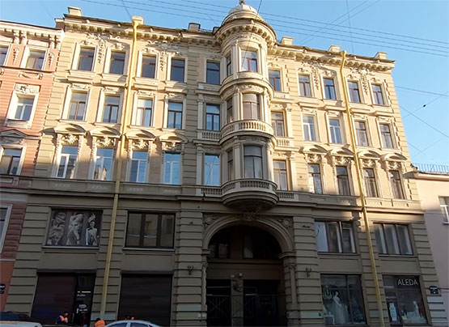
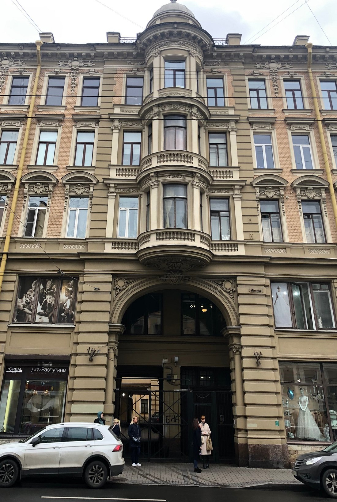
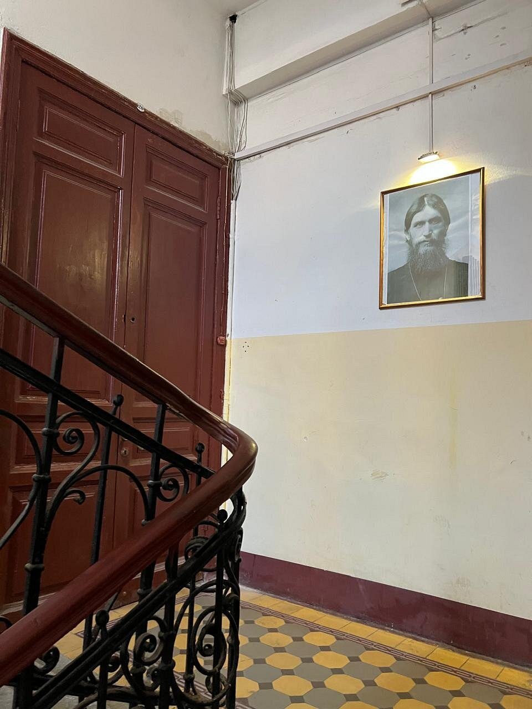

Квартира Распутина на Гороховой

Легенда
Григорий Распутин — одна из самых неоднозначных фигур в российской истории. Одни относятся к нему как к великому пророку и целителю, другие — как к великому шарлатану и обманщику. В 1914 году Распутин снял пятикомнатные апартаменты в доходном доме на Гороховой, 64, где прожил последние годы своей жизни.

Квартира имела собственный парадный вход, возле которого каждый день выстраивалась очередь из желающих получить совет от «божьего человека». К нему приходили люди из самых разных сословий: от простых крестьян до великосветских дам. Говорят, Распутин обладал даром прозрения — он мог посмотреть на человека, взять его за руку и за считанные секунды рассказать всю его жизнь, включая самые сокровенные тайны.

Жильцы квартир по соседству говорят, что по ночам слышат мужской голос и шаги за стеной — глухой, низкий, с характерным сибирским говором. Иногда слышно, как кто-то читает молитвы нараспев, а из-под двери бывшей квартиры старца пробивается тусклый свет, хотя электричество в помещении давно отключено. Известно, что на адрес квартиры по сей день приходят письма людей, которые просят помощи у знаменитого старца: кто-то молит об исцелении, кто-то — о заступничестве, кто-то — о семейном счастье. Конверты приходят со всей России и даже из-за границы. Сейчас в знаменитой квартире располагается музей Григория Распутина, где проходят лекции с историками и краеведами, экскурсии и концерты. Сотрудники музея рассказывают, что иногда экспонаты сами собой меняют положение, а в комнате старца внезапно ощущается запах ладана.
Что было на самом деле
Григорий Распутин действительно жил в доме №64 по Гороховой улице с 1914 по 1916 год. Квартира находилась на третьем этаже и состояла из пяти комнат: прихожая, столовая, кабинет, спальня и комната для гостей. Обстановка была скромной, но добротной — ничего похожего на роскошь, которую ему приписывали недоброжелатели.

Распутин действительно принимал посетителей, и к нему выстраивались огромные очереди — по свидетельствам современников, до сотни человек в день. После его убийства в декабре 1916 года квартира оставалась обычным жилым помещением, в советское время здесь была коммуналка. Слухи о шагах и голосах за стеной объясняются скорее психологическим эффектом и легендарностью личности Распутина: люди склонны слышать то, что ожидают услышать. Письма с просьбами о помощи — сохранившаяся народная вера в его целительные способности, феномен, который можно наблюдать и в отношении других харизматичных религиозных фигур. Сегодня здесь действительно работает музей, восстановлены интерьеры начала XX века, и каждый желающий может прикоснуться к истории, не опасаясь встретить призрак старца.
← Назад к карте